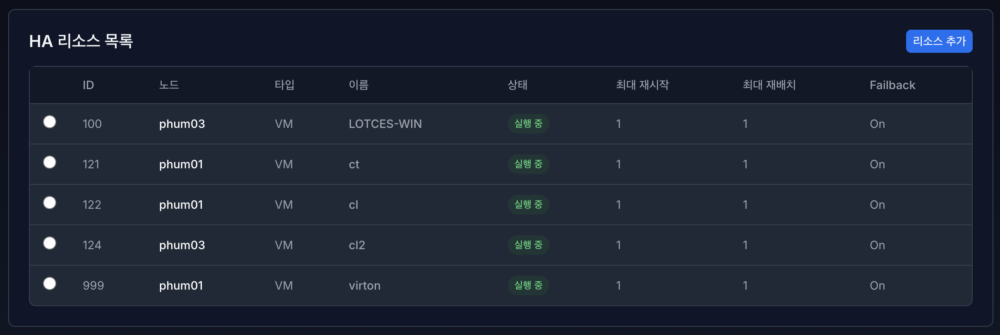
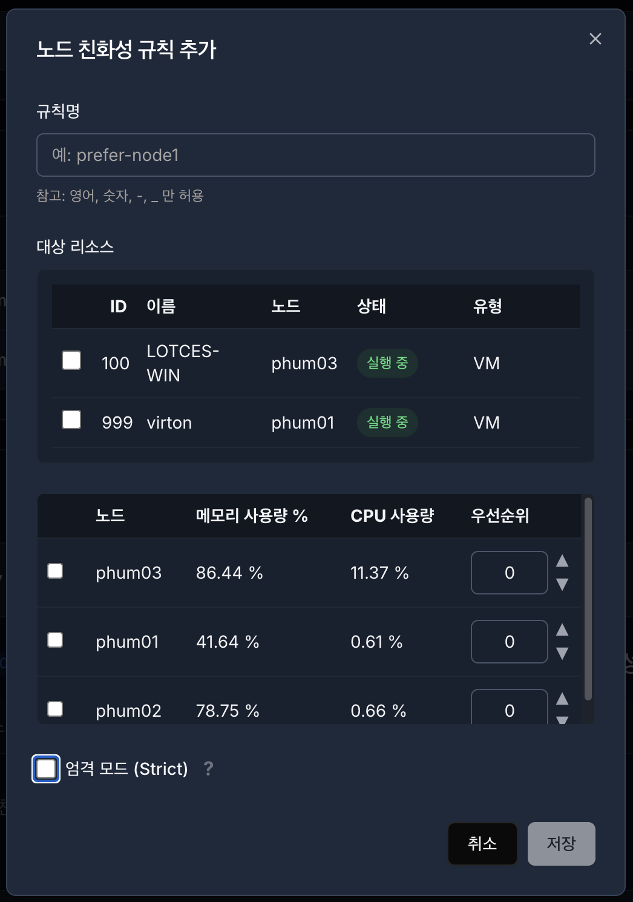

7. 고가용성 (HA - High Availability)#
고가용성(High Availability, HA)은 시스템이나 서비스가 장애 상황에서도 중단 없이 지속적으로 운영될 수 있도록 하는 기능입니다. VirtOn은 Proxmox HA 구조를 기반으로 클러스터 내 노드와 리소스의 가용성을 관리합니다.

VirtOn의 HA 페이지에서는 다음 기능을 제공합니다.
HA 상태 모니터링
HA 리소스 목록
HA 고급 설정 (Affinity Rules)
1. HA 상태 모니터링#

HA 상태 모니터링 영역에서는 클러스터 내 각 노드의 HA 역할, 서비스 유형, 상태를 실시간으로 확인할 수 있습니다.
VirtOn은 Proxmox HA 정보를 기반으로 CRM(Cluster Resource Manager) 과 LRM(Local Resource Manager) 상태를 구분하여 표시합니다.
1.1 CRM (마스터 노드) 상태#
CRM은 클러스터 전체 HA 리소스를 제어하는 중앙 관리 노드입니다. 클러스터 내에는 하나의 CRM 마스터 노드만 존재합니다.
표시 항목
노드 : 현재 CRM 역할을 수행 중인 마스터 노드
역할 :
CRM (마스터 노드)서비스 : Control
상태 (쿼럼 상태)
쿼럼 정상 (OK)
클러스터 다수결이 유지된 정상 상태
초록색으로 표시
실패 (No Quorum)
쿼럼이 상실된 상태
빨간색으로 표시
HA 제어 불가 상태
1.2 LRM (노드별 HA 상태)#
LRM(Local Resource Manager)은 각 노드에서 HA 리소스를 실제로 관리하는 구성 요소입니다.
클러스터에 포함된 모든 노드가 LRM 상태로 표시되며, 노드는 이름 기준(A–Z) 으로 정렬됩니다.
표시 항목
노드 : HA가 구성된 노드 이름
역할 : LRM
서비스 : 해당 노드의 HA 동작 모드
상태 : 노드별 HA 상태
1.3 LRM 상태 종류 및 의미#
상태 |
내부 상태 값 |
설명 |
표시 색상 |
|---|---|---|---|
활성 (Active) |
|
HA가 정상적으로 동작 중이며 리소스를 관리하는 상태 |
초록색 |
유휴 (Idle) |
|
HA 리소스 잠금을 대기 중인 정상 대기 상태 |
회색 |
잠금 유실 (Lost Lock) |
|
HA 에이전트 잠금이 유실된 비정상 상태 |
빨간색 |
오류 (Error) |
|
HA 처리 중 오류가 발생한 상태 |
빨간색 |
⚠️ 주의
Lost Lock상태는 단순 유휴 상태가 아니라 HA 동작 이상 상태이며,
리소스 장애 또는 네트워크/에이전트 문제를 점검해야 합니다.
1.4 데이터 로딩 및 예외 처리#
HA 상태 정보는 Proxmox API를 통해 실시간으로 조회됩니다.
상태 로딩 중에는 로딩 스피너가 표시됩니다.
HA 상태 조회 중 오류가 발생할 경우:
오류 메시지가 표시됩니다.
[다시 시도] 버튼을 통해 즉시 재조회할 수 있습니다.
HA 노드 정보가 없는 경우:
“등록된 노드 정보가 없습니다.” 안내 문구가 표시됩니다.
2. HA 리소스 목록#

HA 리소스 목록 화면에서는 고가용성(HA)이 적용된 VM 및 컨테이너 리소스를 한눈에 확인하고 관리할 수 있습니다.
각 리소스는 장애 발생 시 자동 복구 및 재배치 대상이 됩니다.

2.1 컬럼 설명#
항목 |
설명 |
|---|---|
ID |
Proxmox HA 리소스 ID (VM 또는 CT의 고유 ID) |
노드 |
현재 리소스가 실행 중인 물리 노드 |
타입 |
리소스 유형 (VM 또는 CT) |
이름 |
가상머신 또는 컨테이너 이름 |
상태 |
HA 리소스의 현재 동작 상태 |
최대 재시작 |
장애 발생 시 자동 재시도 횟수 |
최대 재배치 |
노드 장애 시 이동 가능한 최대 횟수 |
Failback |
장애 복구 후 원래 노드로 되돌릴지 여부 |
2.2 리소스 타입 (Type)#
HA 리소스는 다음 두 가지 타입을 가집니다.
타입 |
설명 |
|---|---|
VM |
QEMU 기반 가상머신 |
CT |
LXC 기반 컨테이너 |
2.3 리소스 상태 (Type)#
HA 리소스는 현재 상태에 따라 색상과 텍스트로 시각화됩니다.
상태 |
설명 |
|---|---|
실행 중 (Started) |
정상적으로 실행 중인 상태 |
중지 (Stopped) |
리소스가 중지된 상태 |
실행 요청 중 (Starting) |
HA가 리소스 실행을 시도 중 |
정지 중 (Stopping) |
리소스 종료 처리 중 |
대기 중 (Queued) |
HA 큐에 등록되어 대기 중 |
마이그레이션 중 (Migrate) |
다른 노드로 이동 중 |
복구 중 (Recovery) |
장애 발생 후 복구 작업 진행 중 |
Fence |
노드 장애로 강제 차단 처리된 상태 |
비활성화 (Disabled) |
HA 관리 대상에서 제외된 상태 |
무시됨 (Ignored) |
HA 정책에 의해 일시적으로 무시됨 |
HA 리소스 생성 시, 4가지 상태 중 선택하여 사용한다. (기본값 Started)
실행 상태 (Started) : 정상적으로 실행하는 HA 리소스 생성
중지 (Stopped) : 중지된 상태의 HA 리소스 생성
무시됨 (Ignored) : HA 정책에 의해 일시적으로 무시하는 HA 리소스 생성
비활성화 (Disabled) : HA 관리 대상에서 제외된 HA 리소스 생성
2.4 최대 재시작 (Max Restart)#
리소스 실행 중 오류나 비정상 종료가 발생했을 때,
같은 노드에서 자동으로 다시 실행을 시도하는 최대 횟수입니다.
동작 예시
최대 재시작 =
1VM이 비정상 종료됨
HA가 동일 노드에서 1회 재시작 시도
재시작 실패 시 다음 정책(재배치)로 진행
💡 재시작 횟수가 초과되면 재배치 또는 Fence 정책이 적용됩니다.
2.5 최대 재배치 (Max Relocate)#
재시작 실패 또는 노드 장애 발생 시,
다른 노드로 리소스를 이동할 수 있는 최대 횟수입니다.
동작 예시
최대 재배치 =
1현재 노드 장애 발생
다른 노드로 VM 이동
재배치 횟수 초과 시 추가 이동 중단
💡 클러스터 환경에서 과도한 이동을 방지하기 위한 보호 장치입니다.
2.6 최대 재배치 (Max Relocate)#
장애가 발생했던 노드가 복구된 이후,
리소스를 원래 실행되던 노드로 되돌릴지 여부를 설정하는 옵션입니다.
값 |
설명 |
|---|---|
On |
원래 노드가 복구되면 자동 복귀 |
Off |
현재 실행 중인 노드에 그대로 유지 |
On: 노드 역할이 명확한 환경 (전용 워크로드)
Off: 안정성이 중요한 서비스 (불필요한 이동 방지)
2.7 리소스 선택 및 관리#
목록에서 단일 리소스만 선택 가능
선택 시 다음 작업 가능
수정 : 추가와 모달 항목 동일, 단 ID 변경은 금지
제거 : 제거 모달창 출력
선택하지 않으면 관리 버튼은 비활성화됨
3. HA 고급 설정 (Affinity Rules 설정)#

HA 고급 설정에서는 Affinity Rules(친화성 규칙) 을 통해
HA 리소스의 실행 위치와 배치 정책을 세밀하게 제어할 수 있습니다.
Affinity Rules는 크게 다음 두 가지로 구성됩니다.
노드 친화성 규칙 (Node Affinity Rules)
리소스 친화성 규칙 (Resource Affinity Rules)
각 규칙은 HA 리소스의 배치 안정성과 장애 대응 전략에 직접적인 영향을 미칩니다.
3.1 노드 친화성 규칙 (Node Affinity Rules)#

노드 친화성 규칙은 특정 리소스를 어떤 노드에서 우선적으로 실행할지를 정의합니다.
가중치와 정책을 통해 실행 우선순위와 강제 여부를 설정할 수 있습니다.
항목 |
설명 |
|---|---|
규칙명 |
노드 친화성 규칙의 고유 이름 |
대상 리소스 |
규칙이 적용되는 VM 또는 CT |
노드 목록 (가중치) |
실행 대상 노드와 각 노드의 우선순위 |
정책 (Strict) |
규칙 적용 강제 여부 |
3.1.1 대상 리소스#
해당 규칙이 어떤 HA 리소스(VM/CT)에 적용되는지를 나타냅니다.
하나 이상의 리소스를 지정할 수 있으며, 쉼표(
,)로 구분됩니다.대상 리소스에 포함된 VM/CT는 해당 규칙의 영향을 받습니다.
운영 포인트
핵심 서비스 VM은 명확한 노드 친화성 규칙을 지정하는 것이 권장됩니다.
테스트 또는 비중요 리소스는 규칙 적용을 최소화할 수 있습니다.
3.1.2 노드 목록 (가중치)#
노드 목록은 리소스가 실행될 수 있는 노드와 그 우선순위를 정의합니다.
가중치 개념
가중치는 숫자로 표현됩니다.
값이 높을수록 우선 실행 대상이 됩니다.
가중치가 동일한 경우, 노드 이름 기준으로 정렬됩니다.
가중치가
0인 경우에도 명시적으로 표시됩니다.
동작 방식 예시
노드 |
가중치 |
|---|---|
phum01 |
10 |
phum03 |
5 |
phum02 |
0 |
phum01→ 최우선 실행 노드phum03→ 차순위 실행 노드phum02→ 마지막 후보 노드
💡 장애 발생 시, HA는 가중치가 높은 노드부터 실행을 시도합니다.
3.1.3 정책 (Strict)#
정책은 노드 친화성 규칙을 강제로 적용할지 여부를 결정합니다.
정책 |
설명 |
|---|---|
엄격 (Strict) |
지정된 노드에서만 실행 가능 |
선호 (Preferred) |
가급적 지정 노드에서 실행하되, 불가 시 다른 노드 허용 |
엄격 (Strict)
지정된 노드 외에는 실행되지 않음
모든 지정 노드가 불가능할 경우 리소스는 실행되지 않음
권장 사용 시나리오
라이선스 제약이 있는 VM
특정 하드웨어 의존 서비스
고정된 역할의 노드 구성
선호 (Preferred)
우선 노드를 기준으로 실행 시도
모든 노드가 불가한 경우 다른 노드로 자동 실행
권장 사용 시나리오
일반 서비스 VM
고가용성을 최우선으로 하는 환경
3.2 리소스 친화성 규칙 (Resource Affinity Rules)#

리소스 친화성 규칙은 리소스 간의 실행 관계를 정의합니다.
특정 리소스를 함께 실행하거나, 서로 분리하여 실행할 수 있습니다.
항목 |
설명 |
|---|---|
규칙명 |
리소스 친화성 규칙 이름 |
대상 리소스 |
규칙이 적용되는 VM/CT 그룹 |
정책 (Affinity) |
리소스 간 실행 관계 |
3.2.1 대상 리소스#
규칙이 적용되는 여러 HA 리소스 그룹을 의미합니다.
지정된 리소스들은 하나의 정책 단위로 동작합니다.
3.2.2 정책 (Affinity)#
정책 |
설명 |
|---|---|
함께 실행 (Positive) |
같은 노드에서 실행되도록 유도 |
분리 실행 (Negative) |
서로 다른 노드에서 실행되도록 강제 |
함께 실행 (Positive)
네트워크 지연을 최소화해야 하는 서비스 구성에 적합
예: Web 서버 + Cache 서버
분리 실행 (Negative)
장애 영향 범위를 줄이기 위한 구성
예: Active/Standby, 이중화 서비스